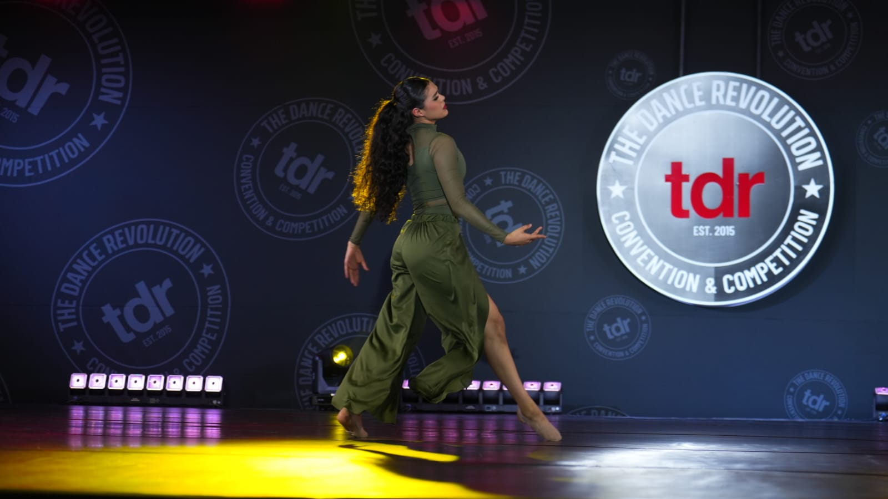
✦
Dance
I have won the Top Solo High Score and a gold medal at TDR, one of Mexico's premier dance competitions, with my very first solo routine.
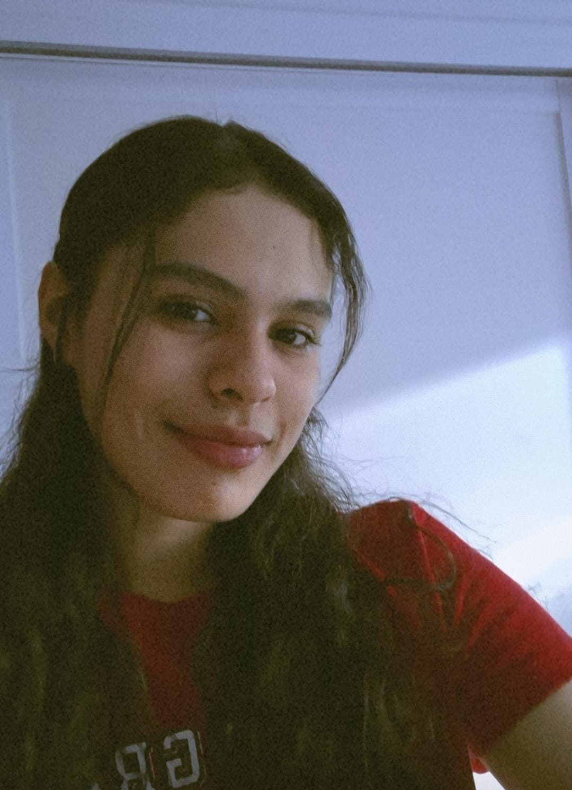
Business Management Engineer
"I am the sum of my scars and the strength of my smiles, which teaches me to be my own safe place."
Welcome to my life. I am a passionate person who finds joy in the journey of learning and self-improvement. Every day, I strive to achieve my personal goals because I believe that consistency shapes our future. Furthermore, I value the quiet moments of reflection just as much as hard work, as both contribute to who I am today.
Chapter 01
I was born in a small city called Cananea, Sonora, where I really enjoyed living because of its tranquility, closeness, and the welcoming people who formed it. My name is Devany Renatta Hernández Bustamante, born on August 21, 2008. I grew up in a hardworking family that always strove for the best and supported me to be my best version. My parents were my biggest role models and my adoration; while I was growing up, they were constantly instilling in me the values and attitudes that formed me as a person. I was very proud to be their daughter and to reflect what they taught me.
My father, Heraclio Hernández Jaramillo, is a very serious and quiet person, but I love watching him smile and have fun. While I was growing up, I loved watching him play basketball. It was something he was excellent at since he was young; he practiced it constantly, and he still loves it today. From him, I inspired myself to practice this sport. One of many memories I had with my father was when he was teaching me how to play basketball on our house's court. From my father, I admired and learned to be resilient, patient, independent, and to have the ability to manage stress and form my own opinion.
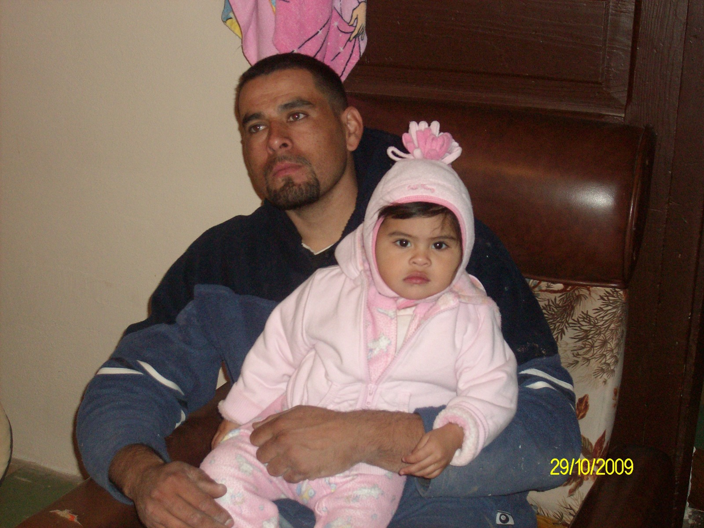
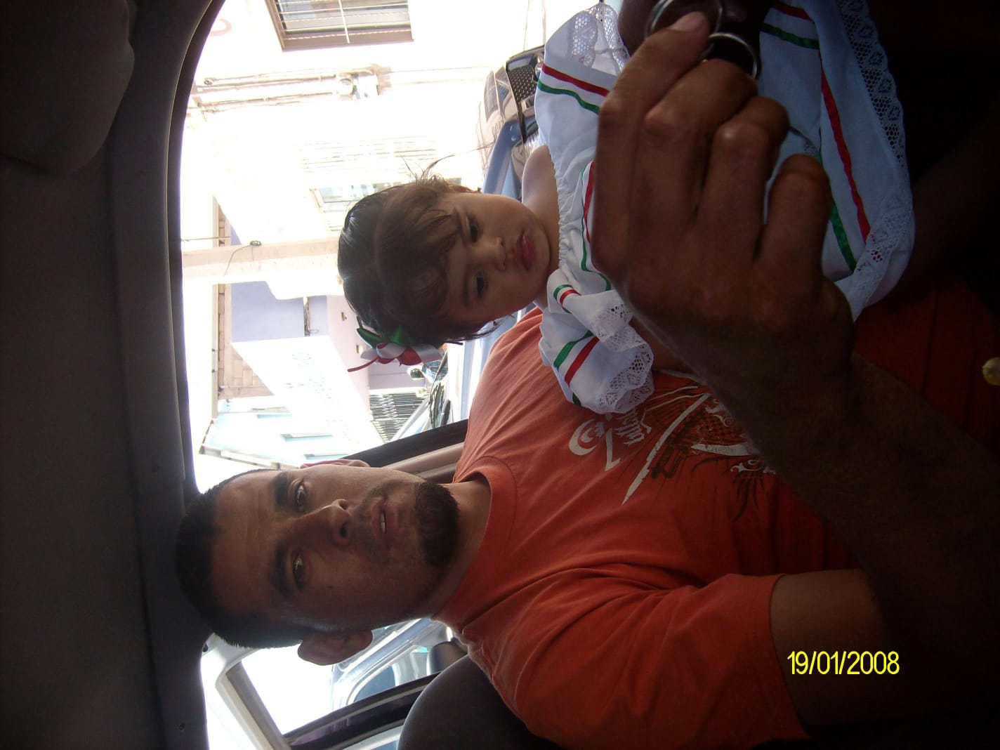
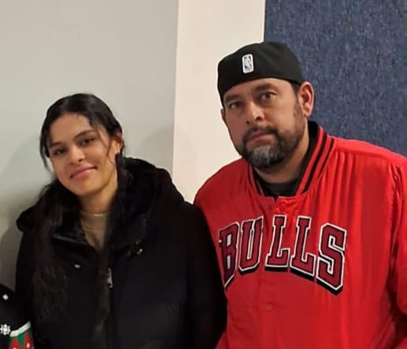
My mother, Noelia Bustamante Villa, was a highly smiling, fun, and quiet person. Since I was little, she looked for the best for me and showed it to me in a thousand ways. I adored our trust and loved when she told me her stories from when she was young. One of the memories I had with her since I was a child was when we were lying down to watch movies and soap operas together. From my mother, I admired and learned to be understanding, empathetic, loving, to have fun, to try, to know when to set boundaries, and to be confident in myself.
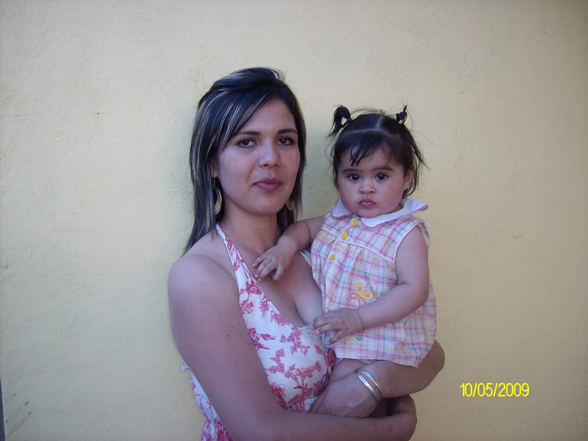
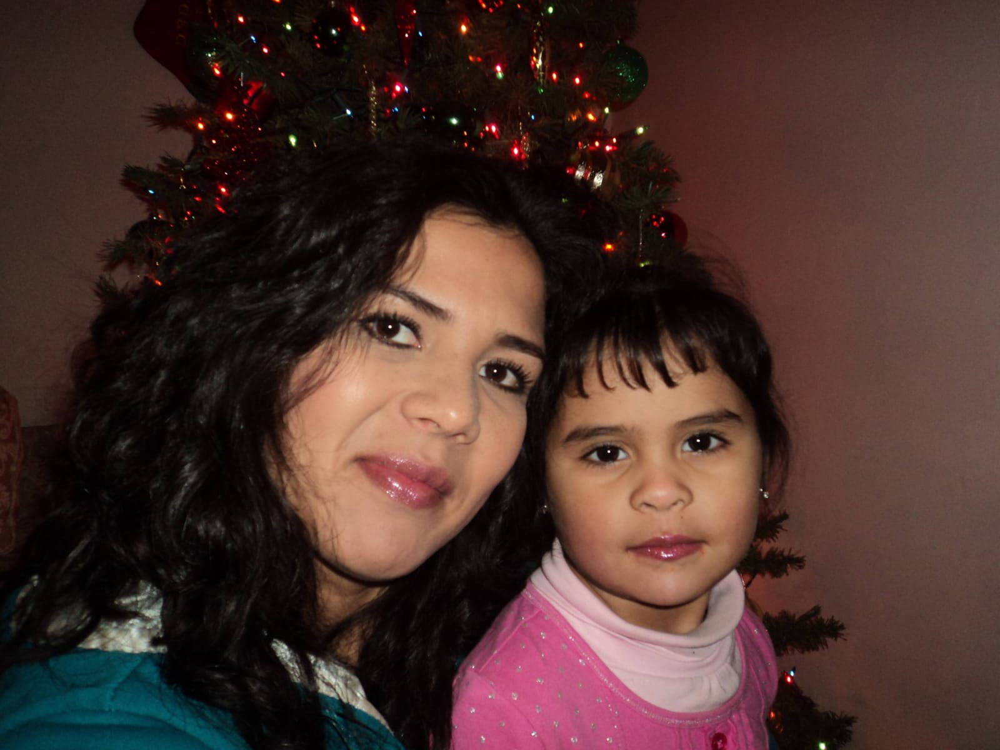
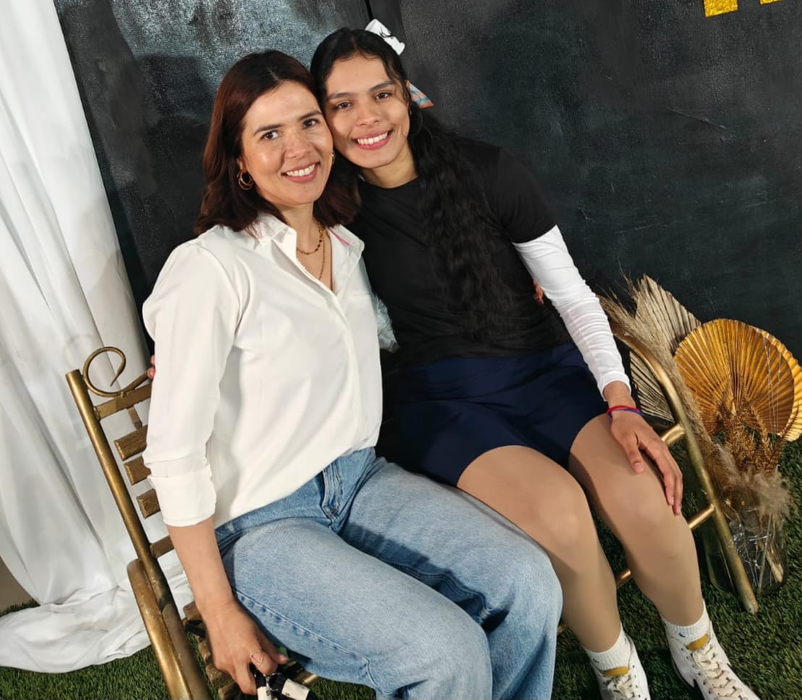
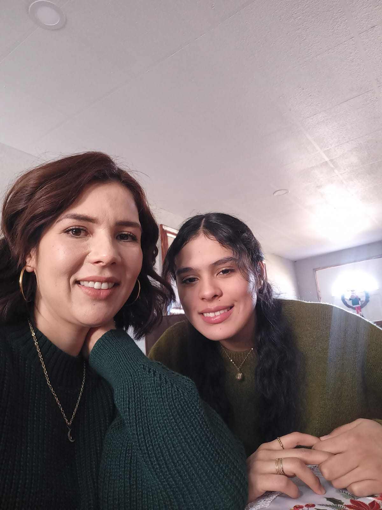
My parents complemented each other, meaning they learned from one another, which made them great people; this gave them the strength to take on the challenge of raising two lives: my brother's and mine. I knew it was not easy at all, because as we were growing up, we made mistakes. Nevertheless, if it weren't for them, we wouldn't know how to identify good from bad. I deeply appreciated that they always wanted the best for us; they protected us, supported us, and advised us in every single one of our decisions. I also appreciated the freedom they gave us and the trust they made us feel. I highly admired and respected every member of my family.
My favorite stories and memories were always dancing. Since I was 3 years old, I had the opportunity to be part of a dance group at the Casa de la Cultura. Later, I was part of what is now Allegro Estudio de Danza, where I lived the best experiences and choreographies. I admired all the teachers who formed this team, as they were excellent professionals and I learned so much from them. Dancing was always my favorite hobby, which I always enjoyed while I recognized my achievements.
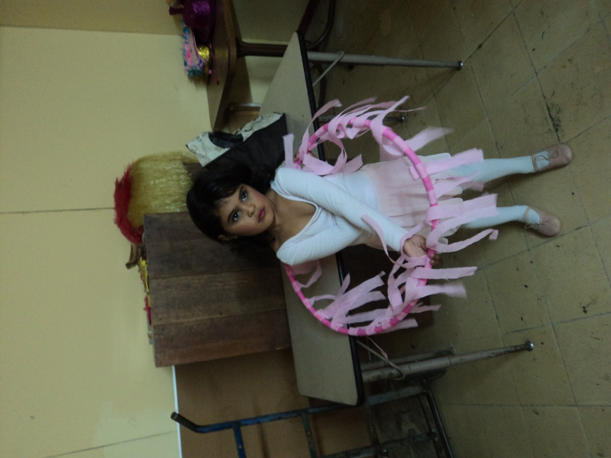
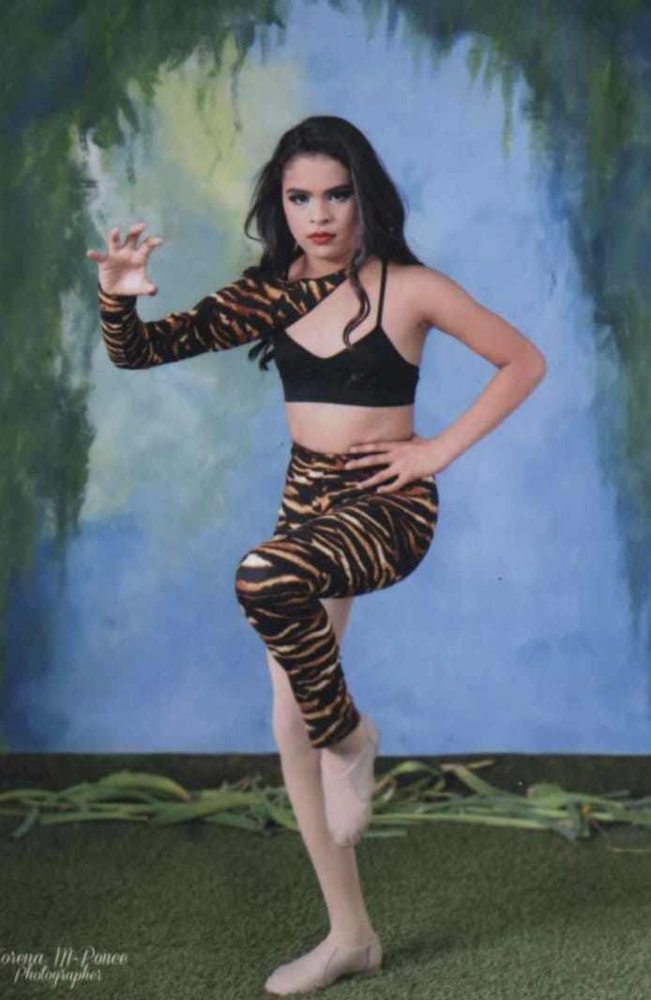
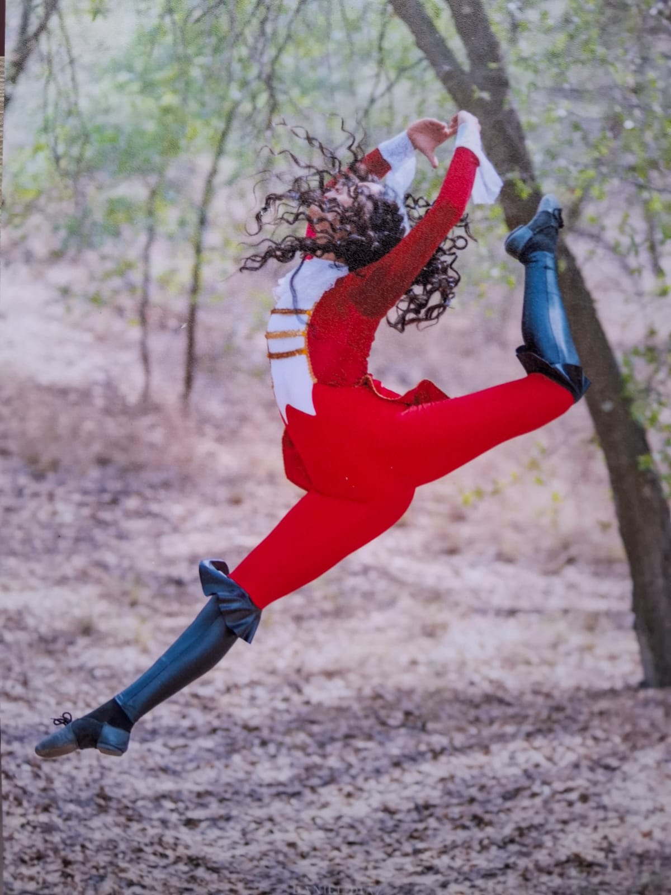
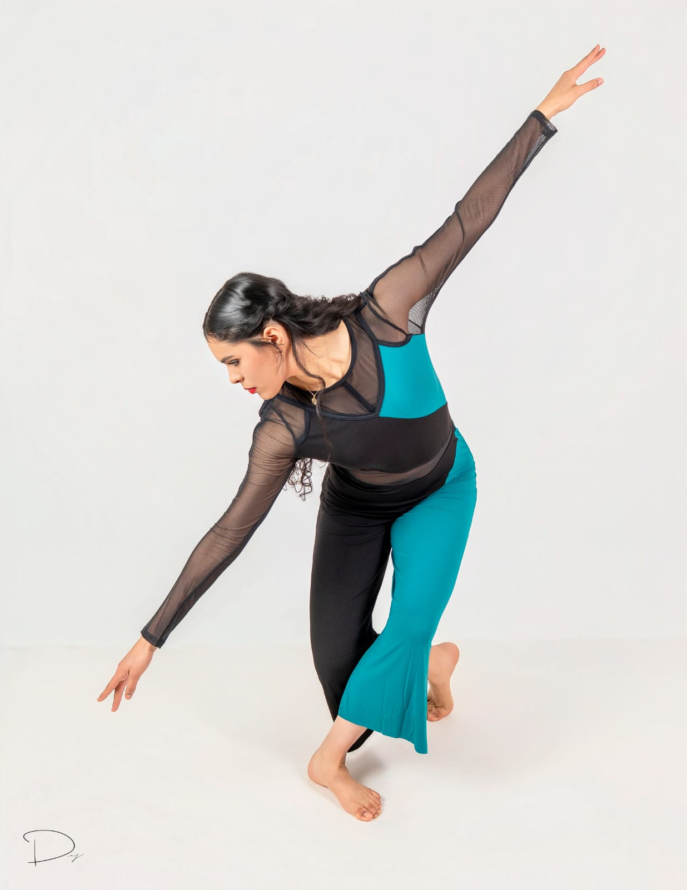
Chapter 02
I vividly remember the time I was about to enter middle school. Before that moment, I had never faced such intense social anxiety, but I pushed myself to be friendly and ended up meeting wonderful people with whom I had so much fun. However, when I transitioned to high school, I changed schools. I got to know new classmates, but I still held onto my middle school friends. Prior to that change, I had assumed they would be in my life forever. Unfortunately, people change, and nothing lasts forever. By the time I noticed the shift, some of those friendships had already become toxic and caused me a great deal of pain. Looking back, if I hadn't changed schools, I would never have realized how quickly people can change. All of those situations made me feel deeply sad, and I went through an incredibly difficult period. Now, I have returned to Instituto Sonora, where I attended middle school. At this very moment, I do not regret returning at all, because it allowed me to finally distance myself from those friends who made me struggle so much.
Other small obstacles along the way involved learning to accept myself. It was not easy at first because I was constantly looking for external validation, and sometimes I even lied just to avoid being judged. However, through these hardships, I learned to respect myself. By establishing healthy boundaries and understanding that my mental well-being must be my top priority, today I accept myself with both my virtues and my shadows, while always seeking to improve. I finally understood that self-respect is the foundation of any healthy relationship.
Adapting to new environments is not always easy; personally, it used to be very difficult for me because I preferred staying comfortable. However, during this past year, I made a conscious decision to accept and try new challenges. Stepping out of my comfort zone has allowed me to grow and adapt to any adversity or situation that comes my way.
Chapter 03

I have won the Top Solo High Score and a gold medal at TDR, one of Mexico's premier dance competitions, with my very first solo routine.
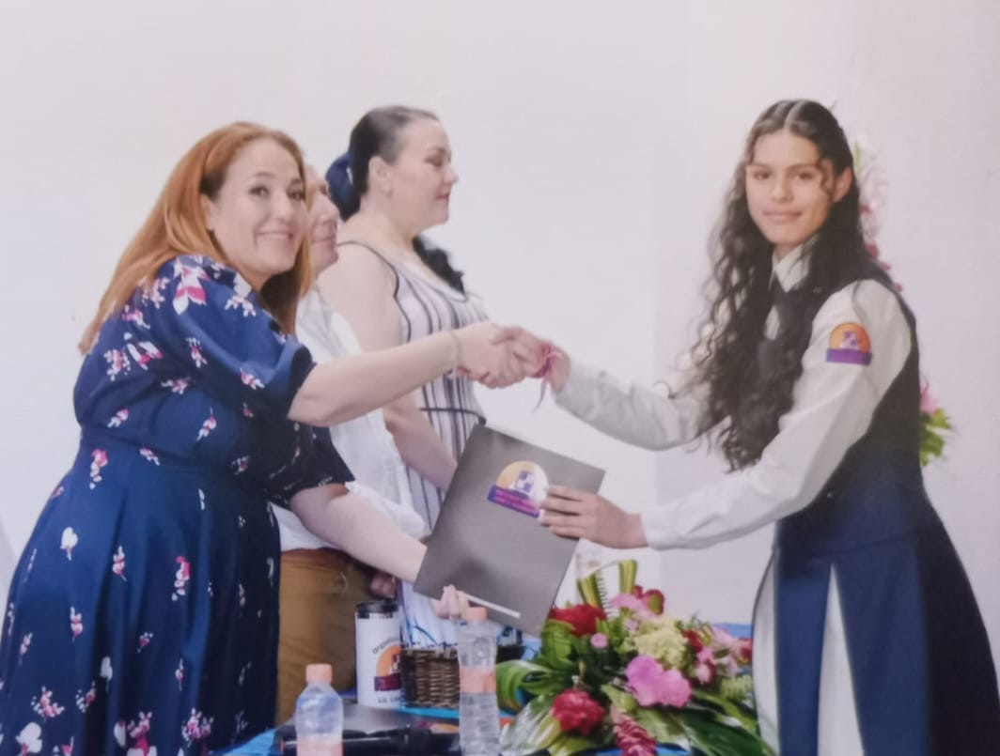
I have been striving for academic excellence throughout my school years, constantly achieving top marks.
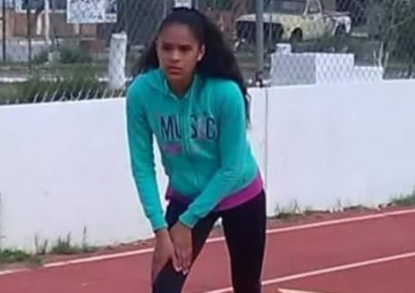
I have won first place in the 300-meter athleticism competition in Agua Prieta, Sonora.
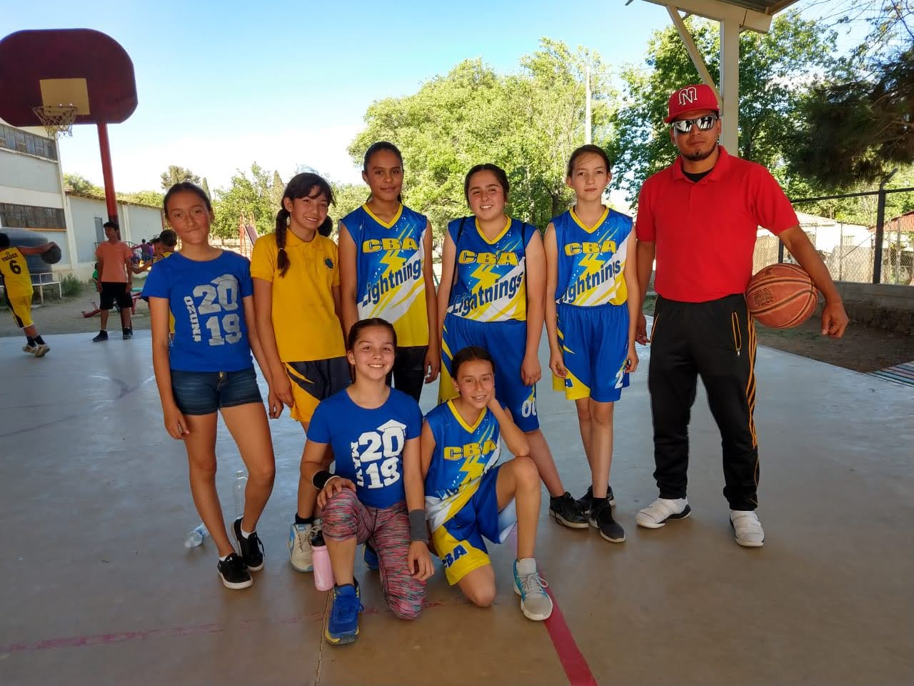
Being selected for the basketball team has enhanced my ability to collaborate and communicate with others.
Chapter 04
I am a woman who has learned to see life in a completely different way. I am someone who is now more positive, chooses not to be consumed by stress, and enjoys doing the things that I love. I have learned to give myself time, which allows me to pursue my personal well-being, to work efficiently, and to do the best that I can. Today, I am a creative and curious person who always gives herself the opportunity to try new things and experiment.
Resilient and Strong-minded: I am someone who transforms past pain into inner strength, which allows me to face life with a positive attitude.
Curious and Self-aware: I am a reflective person whose curiosity drives me to understand myself better and grow from my experiences.
Self-Respect and Boundaries: I deeply value my mental well-being, which has become my top priority after learning to overcome the need for external validation.
Respect and Gratitude: I am a respectful individual who highly values the support system provided by the people that love and protect me.
Resilience: I possess a remarkable resilience that helps me turn emotional scars into reasons to smile.
Perseverance and Hard Work: I am a hardworking and constant student of life who does not fear failure, because I look at mistakes as lessons which help me improve.
Emotional Independence: I am my own safe place, proving that I no longer depend on others to feel secure.
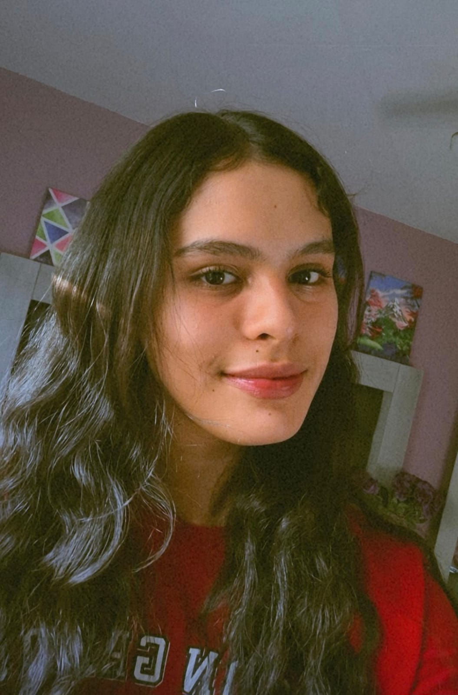
Chapter 05
Before, this question overwhelmed me a lot, and it still does, but I will do my best to achieve what I want. What I am sure of is that I am going to study a university degree in Cananea, specifically Business Management Engineering, where I hope to expand my knowledge and work the best I can. As for my goals and dreams, I want to experience everything in life; I want to try everything. Perhaps life is too short to achieve it all, but I hope and will try to feel satisfied with whatever I accomplish. If I make mistakes, I hope I will get back up and will continue dreaming. Next year, I will be pursuing my passions, and I will be working hard to build my own future.
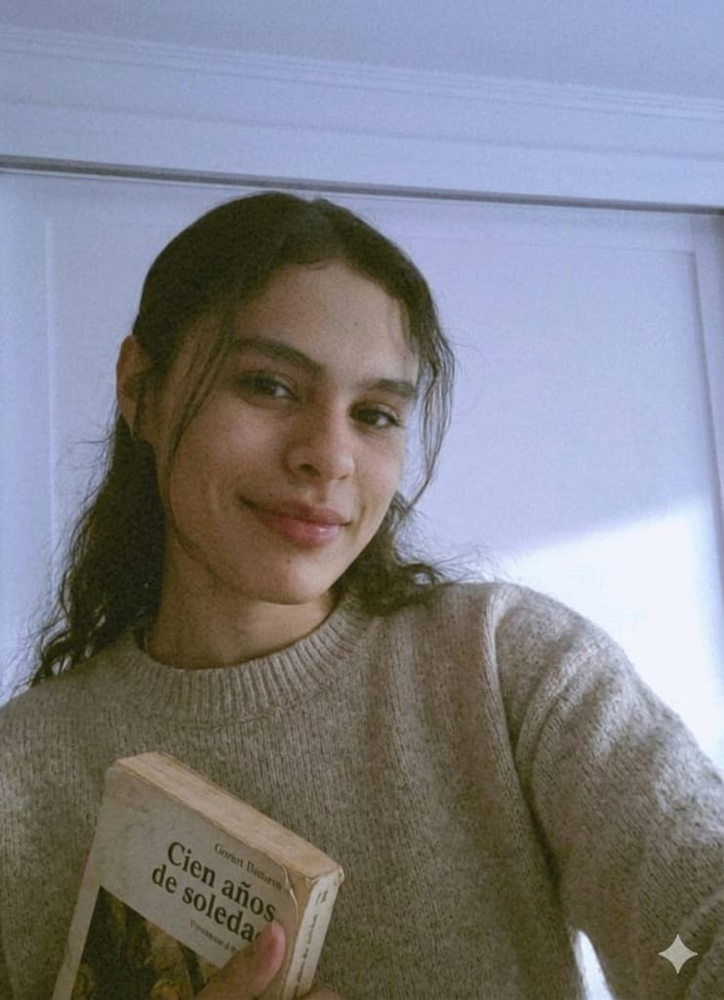
Chapter 06
"Today I recognize myself as someone who has stopped chasing perfection to embrace their authenticity. Looking back, I realize I could have made different choices during moments of doubt, and I might have given up when things became overwhelming. However, I see that today I am much stronger than I thought. I should have trusted myself much earlier, but every obstacle taught me to set boundaries and protect my peace of mind. Moving forward, my goal is clear: I want to be a professional, while maintaining a curiosity for learning and the courage to face new challenges without losing my essence."
Gallery
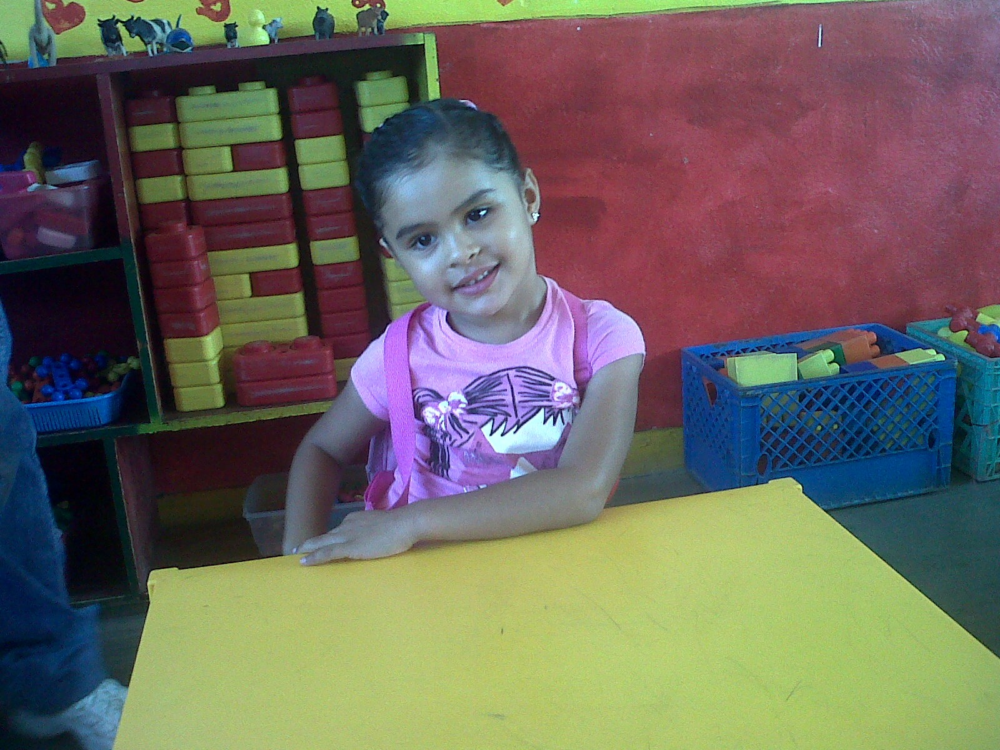
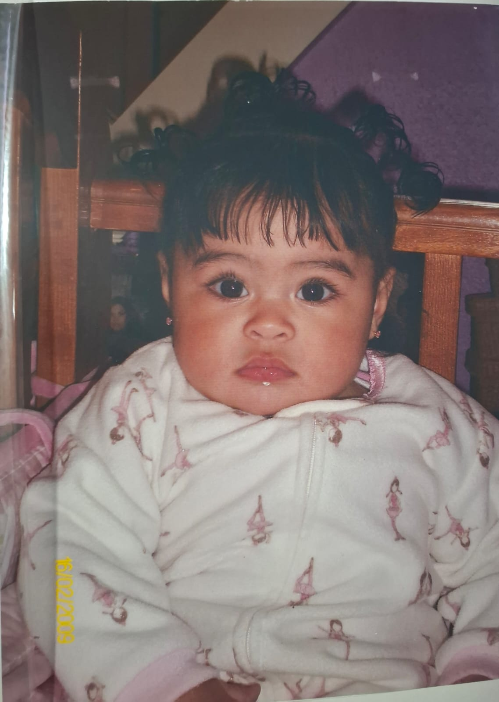
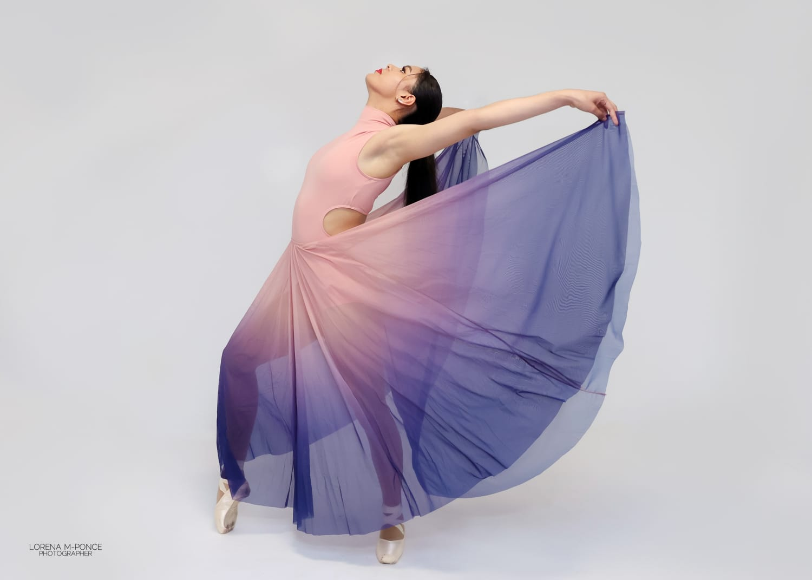
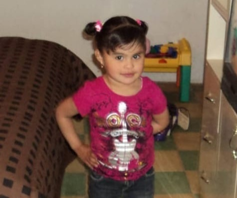
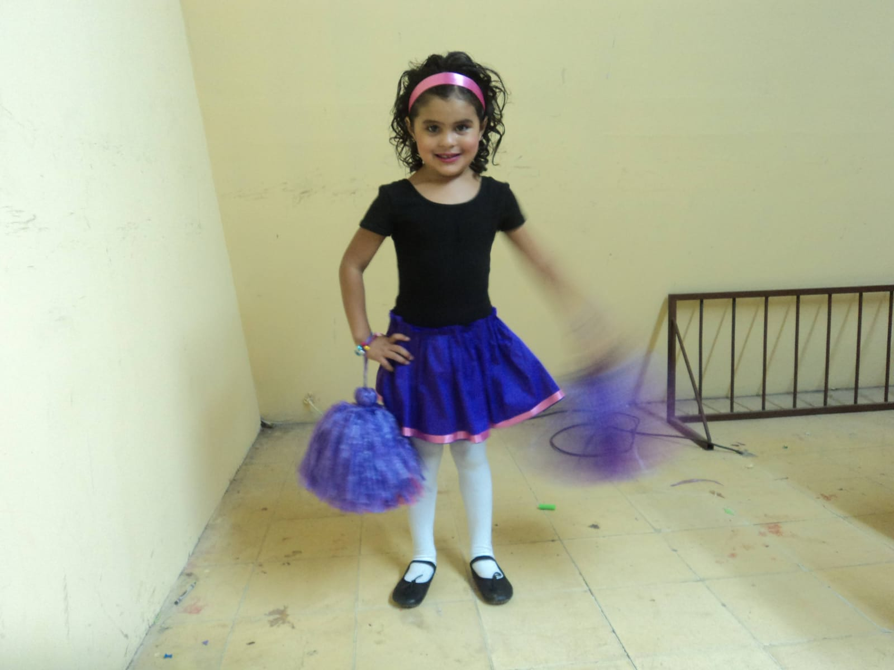
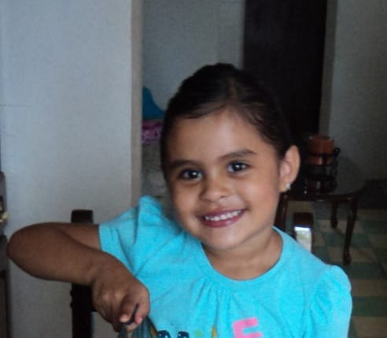
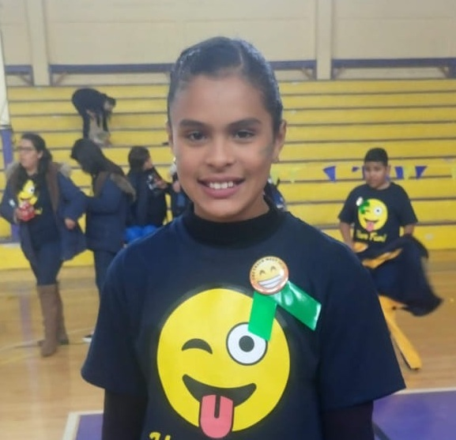
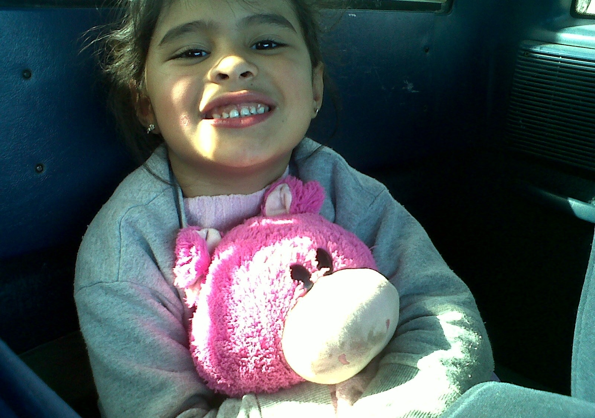